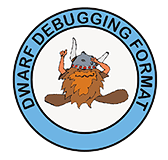

Overview
复习
- A
fork()in the road: 创造平行宇宙
本次课回答的问题
- Q: 可执行文件到底是什么？
本次课主要内容
- 可执行文件
- 解析可执行文件
- 链接和加载
今天假设只有静态链接
可执行文件
RTFM
本次课涉及的手册
- System V ABI: System V Application Binary Interface (AMD64 Architecture Processor Supplement) (repo)
- 和更多 refspecs
(不用听了，可以下课了)
- 课堂要回答的问题
- 为什么 f**king manual 是 f**king 的?
- 应该怎么读手册？
可执行文件：状态机的描述
操作系统 “为程序 (状态机) 提供执行环境”
- 可执行文件 (状态机的描述) 是最重要的操作系统对象！
一个描述了状态机的初始状态 + 迁移的
- 寄存器
- 大部分由 ABI 规定，操作系统负责设置
- 例如初始的 PC
- 地址空间
- 二进制文件 + ABI 共同决定
- 例如 argv 和 envp (和其他信息) 的存储
- 其他有用的信息 (例如便于调试和 core dump 的信息)
例子：操作系统上的可执行文件
需要满足若干条件
- 具有执行 (x) 权限
- 加载器能识别的可执行文件
$ ./a.c
bash: ./a.c: Permission denied
$ chmod -x a.out && ./a.out
fish: The file “./a.out” is not executable by this user
$ chmod +x a.c && ./a.c
Failed to execute process './a.c'. Reason:
exec: Exec format error
The file './a.c' is marked as an executable but could not be run by the operating system.
是谁决定了一个文件能不能执行？
操作系统代码 (execve) 决定的。
动手试一试
- strace ./a.c
- 你可以看到失败的 execve!
- 没有执行权限的 a.c: execve = -1, EACCESS
- 有执行权限的 a.c: execve = -1, ENOEXEC
- 再读一遍 execve (2) 的手册
- 读手册的方法：先理解主干行为、再查漏补缺
- “ERRORS” 规定了什么时候不能执行
常见的可执行文件

- 绿导师原谅你了.avi
- Windows 95/NT+, UEFI
- PE (Portable Executable), since Windows 95/NT+
- UNIX/Linux
- a.out (deprecated)
- ELF (Executable Linkable Format)
- She-bang
- 我们可以试着 She-bang 一个自己的可执行文件！
- She-bang 其实是一个 “偷换参数” 的 execve
解析可执行文件
Binutils - Binary Utilities
- 生成可执行文件
- ld (linker), as (assembler)
- ar, ranlib
- 分析可执行文件
- objcopy/objdump/readelf (计算机系统基础)
- addr2line, size, nm
可执行文件的运行时状态
segfault.c - 为什么 gdb 知道出错的位置？
- gcc (-static -g)
$ ./a.out
Segmentation fault (core dumped)
(gdb) r
Starting program: /tmp/demo/a.out
Program received signal SIGSEGV, Segmentation fault.
bar () at segfault.c:4
4 *(int *)NULL = 1;
(gdb) bt
#0 bar () at segfault.c:4
#1 0x0000000000401d0d in foo () at segfault.c:8
#2 0x0000000000401d22 in main () at segfault.c:12
调试信息

将一个 assembly (机器) 状态映射到 “C 世界” 状态的函数
- The DWARF Debugging Standard
- 定义了一个 Turing Complete 的指令集
DW_OP_XXX - 可以执行 “任意计算” 将当前机器状态映射回 C
- RTFM
- 定义了一个 Turing Complete 的指令集
- 但非常不完美
- 对现代语言支持有限 (C++ templates)
- 还是因为编程语言太复杂了
- 编译器也没法保证就做得对
- 各种令人生气的
- 各种不正确的调试信息
- 各种令人生气的
- 对现代语言支持有限 (C++ templates)
例子：Stack Unwinding
- 需要的编译选项
- -g (生成调试信息)
- -static (静态链接)
- -fno-omit-frame-pointer (总是生成 frame pointer)
- 可以尝试不同的 optimization level
- 再试试 gdb
没有 frame pointer 的时候呢？
- Linus 锐评 Kernel backtrace unwind support
- Reliable and fast DWARF-based stack unwinding (OOPSLA'19)
- 一般问题：Still open (有很多工作可以做)
逆向工程 (Reverse Engineering)
得到 “不希望” 你看到的商业软件代码 (然后就可以分析漏洞啥了)
- 调试信息 (代码) 是绝对不可能了
- 连符号表都没有 (stripped)
- 看起来就是一串指令序列 (可以执行)

编译和链接
从 C 代码到二进制文件
被《计算机系统基础》支配的恐惧？
// main.c
void hello();
int main() {
hello();
}
// hello.c
#include 其实不难
编译器生成文本汇编代码 → 汇编器生成二进制指令序列
0000000000000000 :
0: f3 0f 1e fa endbr64
4: 48 83 ec 08 sub $0x8,%rsp
8: 31 c0 xor %eax,%eax
a: e8 00 00 00 00 callq ????????
f: 31 c0 xor %eax,%eax
11: 48 83 c4 08 add $0x8,%rsp
15: c3 retq
但有些地址编译的时候不知道啊 (比如 hello)
- 就先填个 0 吧
重定位 (Relocation)
但这 4-bytes 最终是需要被填上的，使得 assertion 被满足：
assert(
(char *)hello ==
(char *)main + 0xf + // call hello 的 next PC
*(int32_t *)((uintptr_t)main + 0xb) // call 指令中的 offset
);
这个要求也要被写在文件里
- ELF 文件：部分状态机的 “容器”
Offset Type Sym. Name + Addend 00000000000b R_X86_64_PLT32 hello - 4- 重填 32-bit value 为 “S + A - P” (P = main + 0xb)
- 如何理解？考虑 call “S + A - P” 的行为
重新理解编译、链接流程
编译器 (gcc)
- High-level semantics (C 状态机) → low-level semantics (汇编)
汇编器 (as)
- Low-level semantics → Binary semantics (状态机容器)
- “一一对应” 地翻译成二进制代码
- sections, symbols, debug info
- 不能决定的要留下 “之后怎么办” 的信息
- relocations
- “一一对应” 地翻译成二进制代码
链接器 (ld)
- 合并所有容器，得到 “一个完整的状态机”
- ldscript (
-Wl,--verbose); 和 C Runtime Objects (CRT) 链接 - missing/duplicate symbol 会出错
- ldscript (
奇怪，我们完全没有讲 ELF 的细节？
ELF 就是一个 “容器数据结构”，包含了必要的信息
- 你完全可以试着自己定义二进制文件格式 (dump it to disk)！
struct executable {
uint32_t entry;
struct segment *segments;
struct reloc *relocs;
struct symbol *symbols;
};
struct segment { uint32_t flags, size; char data[0]; }
struct reloc { uint32_t S, A, P; char name[32]; };
struct symbol { uint32_t off; char name[32]; };
- 当然，这有很多缺陷
- “名字” 其实应该集中存储 (
const char *而不是char[]) - 慢慢理解了 ELF 里的各种设计 (例如 memsz 和 filesz 不一样大)
- “名字” 其实应该集中存储 (
总结
总结
本次课回答的问题
- Q: 可执行文件到底是什么？
Take-away messages
- 可执行文件：
一个描述了状态机的数据结构 - 用好工具：binutils, gdb